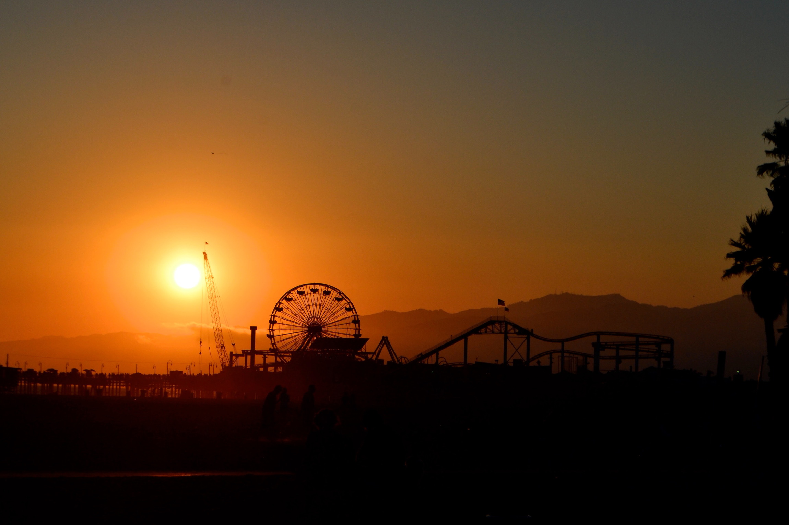

Santa Monica
The Santa Monica Pier, located at the end of the historic Route 66 in Santa Monica.
Palos Verdes
White Point (aka Royal Palms Beach) is located just off West Paseo Del Mar under the bluffs of White Point Park.
LAX (Los Angeles Airport)
Airplane Landing View Point is the best place to watch airplanes land and is located on W 92nd St, Los Angeles.